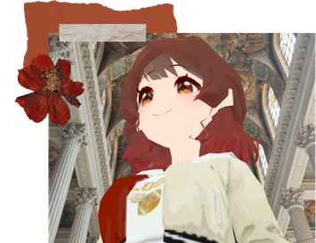
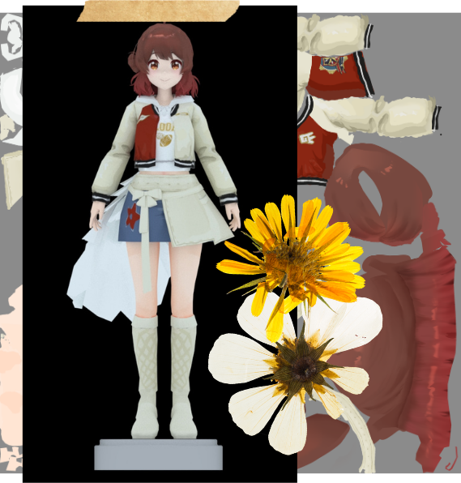
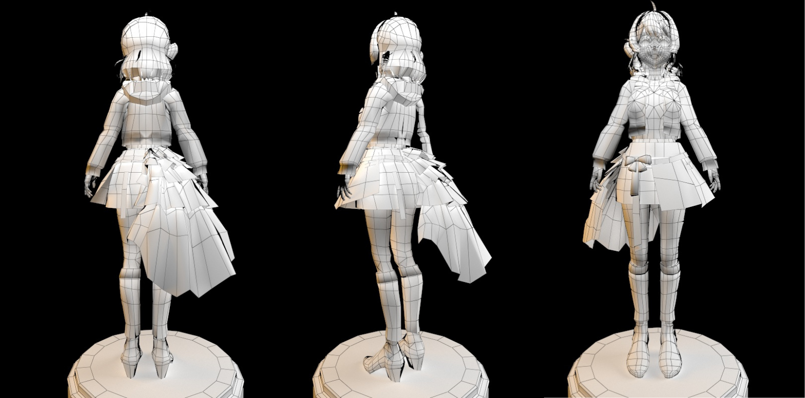
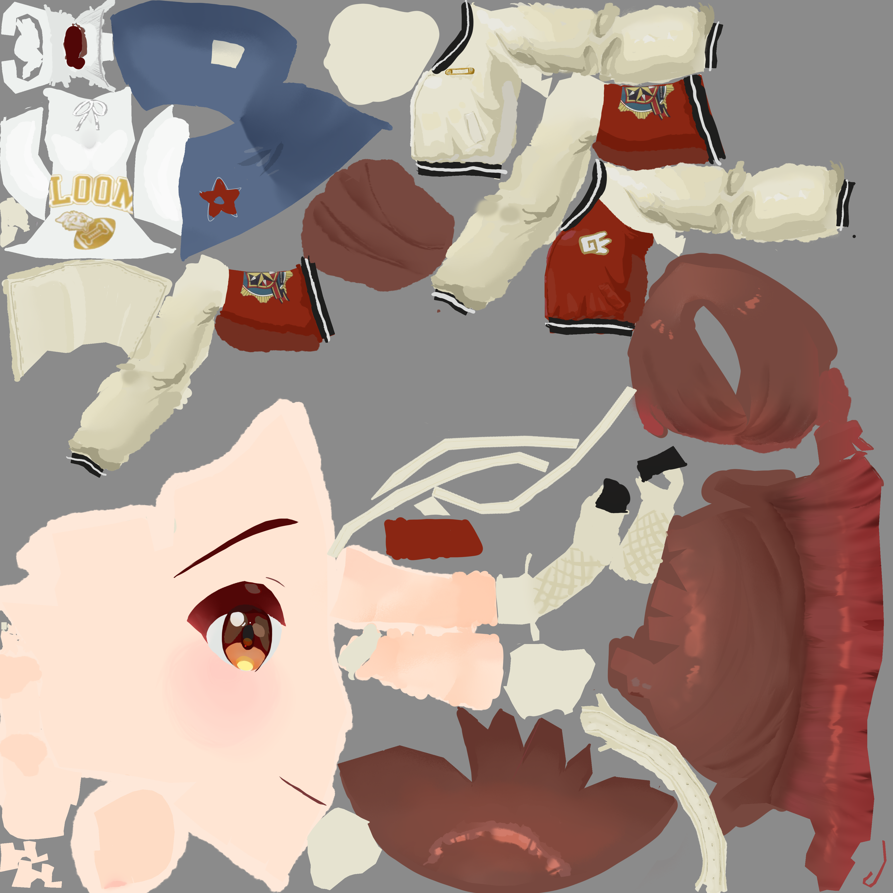
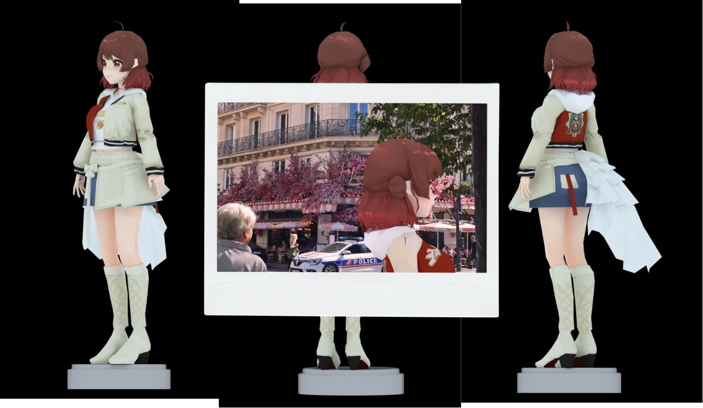
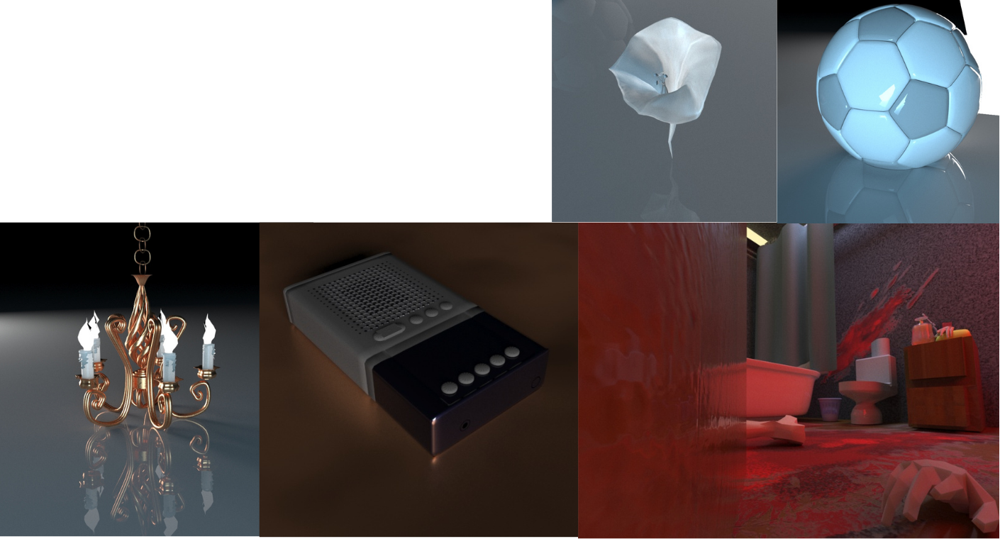
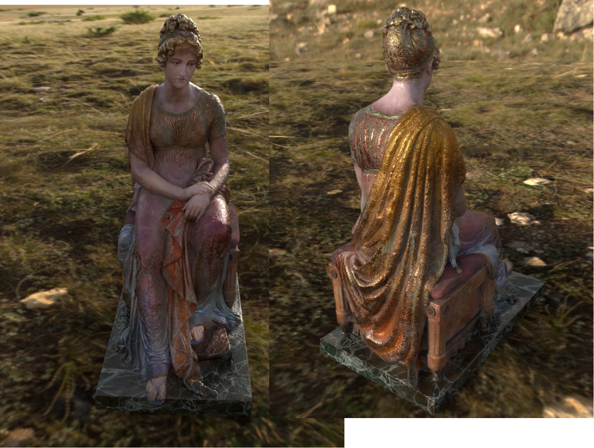
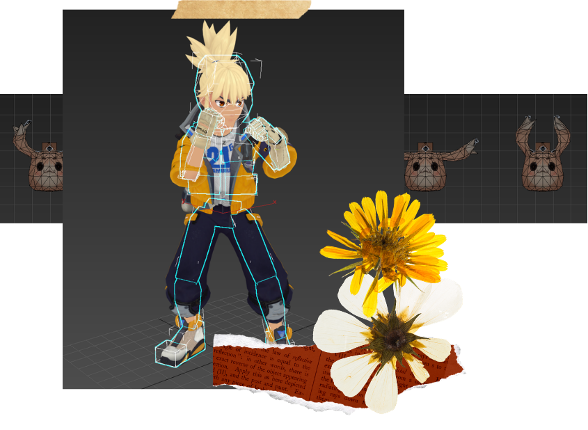

低模
从0开始在3ds Max里制作角色模型，包括布线、展UV、贴图和最终展示效果。
3D建模 / 贴图材质 / Unity导入 / 动作测试
3ds Max：建模、UV、基础骨骼/权重
ZBrush：雕刻、模型细化
Substance 3D Painter：材质和贴图绘制
Unity：模型/动画资产导入，基础展示和测试
虚拟主播直播软件适配
VRM / 表情 / 动捕相关流程
更规范的模型交付方式
为爱发电可，有小任务欢迎找我做，主要是看看我到底能不能帮上忙
绝对配合！如果我做不到，会提前说。
项目文件、沟通内容和未公开模型不会擅自外传。
想放进简历或作品集的情况我会先问。

从0开始在3ds Max里制作角色模型，包括布线、展UV、贴图和最终展示效果。

使用ZBrush / Substance 3D Painter处理雕塑模型，重点是材质、质感、贴图通道和最终渲染效果。

使用3ds Max完成基础骨骼绑定、刷权重和走路循环。部分动画还在继续调整。
低模角色练习参考《学园偶像大师》花海佑芽进行角色练习。
多边形数3513
顶点数3943
这个作品主要是为了练习从0开始做二次元低模角色。流程包括：建模、布线、展UV、手绘贴图、基础展示。

网格展示，主要看布线、结构和模型拆分。
老师教的展示方法，不知道是不是我的打光问题有些地方是黑的，需要的话可以在文件里详细看。

老师说要放的，所以放一下
包含角色服装、头发、皮肤和装饰部件的贴图绘制。贴图偏手绘风格，因为是用ps画的。


以防你不知道我也会做
包含小物件建模、材质、灯光和简单场景渲染。

使用软件主要是 Substance 3D Painter
主要作用材质和质感的体现
目前还没有正式尝试和二次元角色结合，但我很想试试：比如在二次元模型上做更明显的材质层次，接近《终末地》那种“角色仍然二次元，但材质更有存在感”的方向。

这个练习更偏材质表现，不是手游资产规范流程。
UV利用率还有优化空间，但最终效果基本能支撑材质展示。


这个作品的目标是把雕塑重新涂装成“像重新活过来”的感觉。
脸和手臂做得更光滑，有一点大理石质感；衣服和底座保留较粗糙的旧化痕迹。

动画 / 骨骼练习模型由课程提供，我负责骨骼绑定、刷权重和基础动作测试。
主要练习：走路循环、跟随运动、弹跳小球等基础动画规律。

请看VCR。这里放两个直拳测试视频。
请看VCR。
基础动画规律练习。重点是跟随、缓冲、弹性和节奏感。
这个视频里画面有一点卡顿，主要是当时电脑C盘空间快满了，录屏和软件同时运行时会掉帧；动作逻辑本身是完整做出来的。
需要的话我可以整理后发。
作品截图、短视频、软件截图、模型/贴图流程说明。
如果需要工程文件或源文件，我会先整理命名和目录，避免直接丢一堆乱文件。
如果有合适的小需求，
我可以先从一个测试件开始配合。